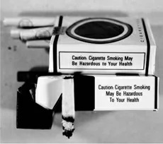

Finding cancer before it becomes dangerous
Another approach to prevention is screening: detecting precancerous changes or small cancers before symptoms develop. George Papanicolaou develops a method of examining cervical cells, later known as the Pap smear. The test can reveal abnormal cellular changes that occur before invasive cervical cancer, creating an opportunity for early intervention.
The promise of the Pap test
Rather than waiting for a large, symptomatic tumor, physicians can recognize a disease at an earlier biological stage. This is not the same as eliminating all cancer risk, but it can make treatment more successful. The success of cervical screening becomes one of the major examples of cancer prevention through early detection.
Mammography and its complexity
Researchers also investigate mammography to identify breast cancers earlier. Trials compare groups receiving screening with those receiving ordinary care. The central question is not merely whether more tumors can be detected, but whether screening reduces deaths and improves meaningful outcomes.

The screening paradox
More sensitive tests may detect tumors that would never have caused symptoms, leading to overdiagnosis and unnecessary treatment. Earlier diagnosis can also increase the time a person knows they have cancer without necessarily changing the date of death—lead-time bias. Screening therefore requires evidence about benefits and harms, not only attractive pictures of tiny tumors.
When early detection meets radical treatment
As efforts to detect cancer earlier improve, some oncologists still believe that the right answer is ever-more-intensive chemotherapy. The contrast is striking: one strategy attempts to interrupt cancer near its beginning, while the other tries to overwhelm advanced disease with maximum doses. The next chapter examines the danger of making that escalation a rule rather than a tested hypothesis.
